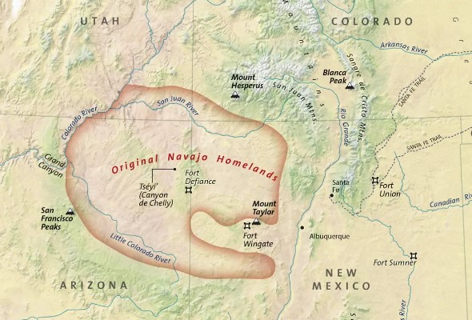

DinéNavajo
Before colonization, the Diné were a semi-nomadic group connected to the larger Pueblo tribes. They generally lived around what is now known as Colorado, Arizona, Utah and New Mexico.

What the Diné can teach us about the environment
*As the collaborators of this project continue research, there will be more tribes added
Go